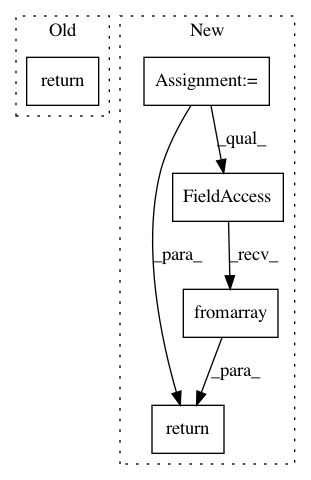

d381fb0787395076ecb8a3bd6984f52a16793fae,dataset/batch_image.py,ImagesBatch,_salt_,#ImagesBatch#Any#Any#Any#Any#,613
Before Change
left_top = np.asarray((mask_salt[0][i], mask_salt[1][i]))
right_bottom = np.minimum(left_top + current_size, self._get_image_shape(image))
image[left_top[0]:right_bottom[0], left_top[1]:right_bottom[1]] = color_lambda()
return image
def _threshold_(self, image, low=0., high=1., dtype=np.uint8):
Truncate image"s pixels.
After Change
right_bottom = np.minimum(left_top + current_size, self._get_image_shape(image))
image[left_top[0]:right_bottom[0], left_top[1]:right_bottom[1]] = color_lambda()
return PIL.Image.fromarray(image)
def _clip_(self, image, low=0, high=255):
Truncate image"s pixels.
In pattern: SUPERPATTERN
Frequency: 3
Non-data size: 5
Instances
Project Name: analysiscenter/batchflow
Commit Name: d381fb0787395076ecb8a3bd6984f52a16793fae
Time: 2018-03-27
Author: g.ivanov@analysiscenter.ru
File Name: dataset/batch_image.py
Class Name: ImagesBatch
Method Name: _salt_
Project Name: analysiscenter/batchflow
Commit Name: 49f4e83ae4323e032bdd232e466e59b4aeceb458
Time: 2018-03-28
Author: g.ivanov@analysiscenter.ru
File Name: dataset/batch_image.py
Class Name: ImagesBatch
Method Name: _salt_
Project Name: analysiscenter/batchflow
Commit Name: 8056a9ff054ff9321b1dd5dd0a29fd56237357b6
Time: 2018-04-13
Author: g.ivanov@analysiscenter.ru
File Name: dataset/opensets/mnist.py
Class Name: MNIST
Method Name: _extract_images